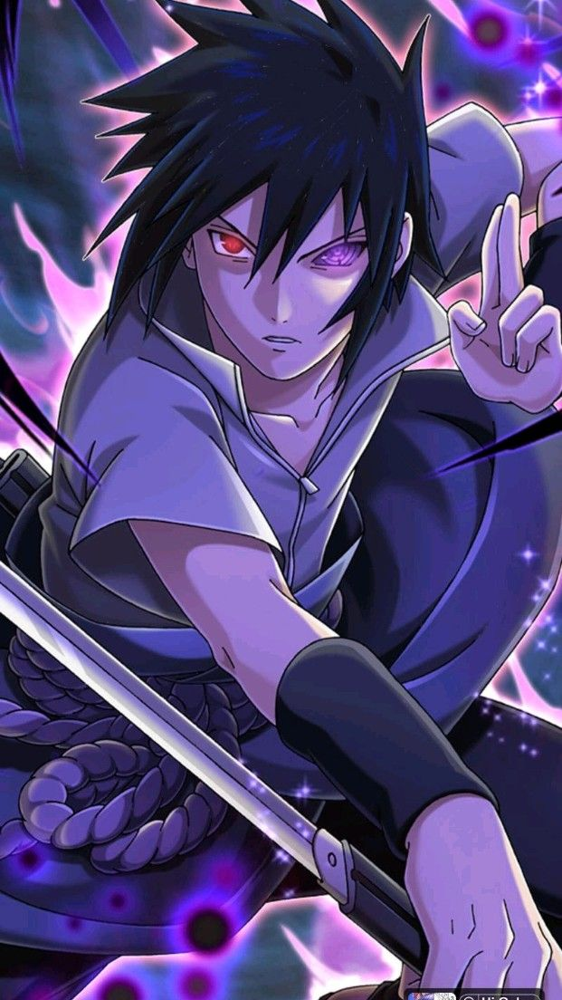
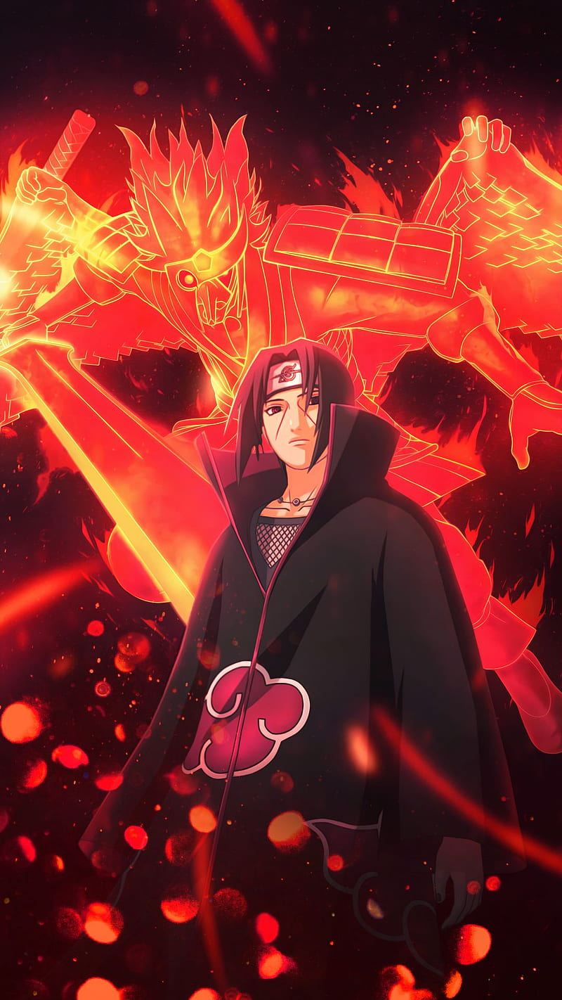
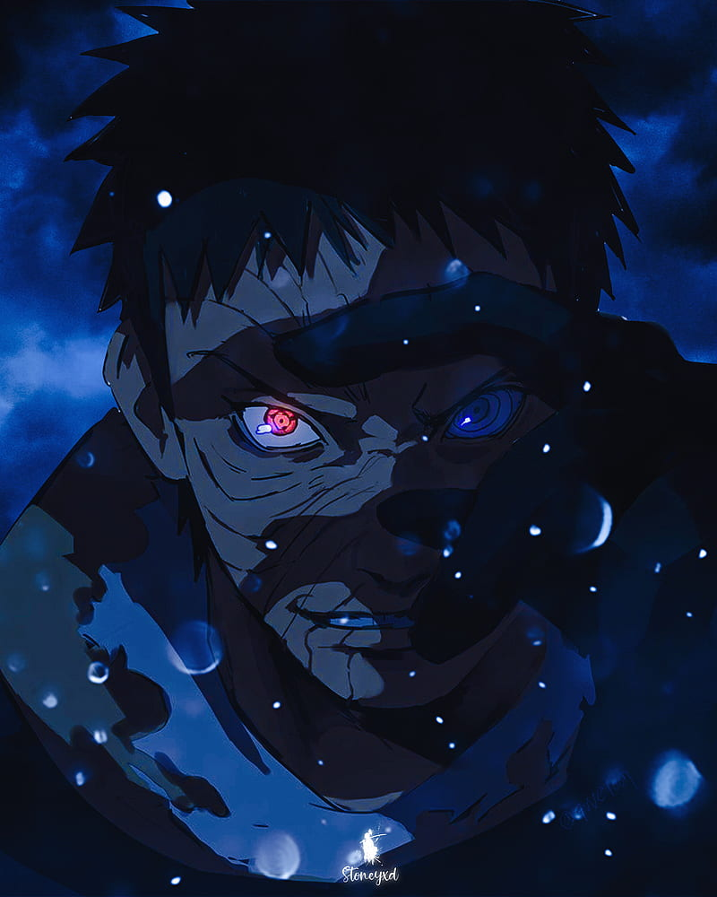
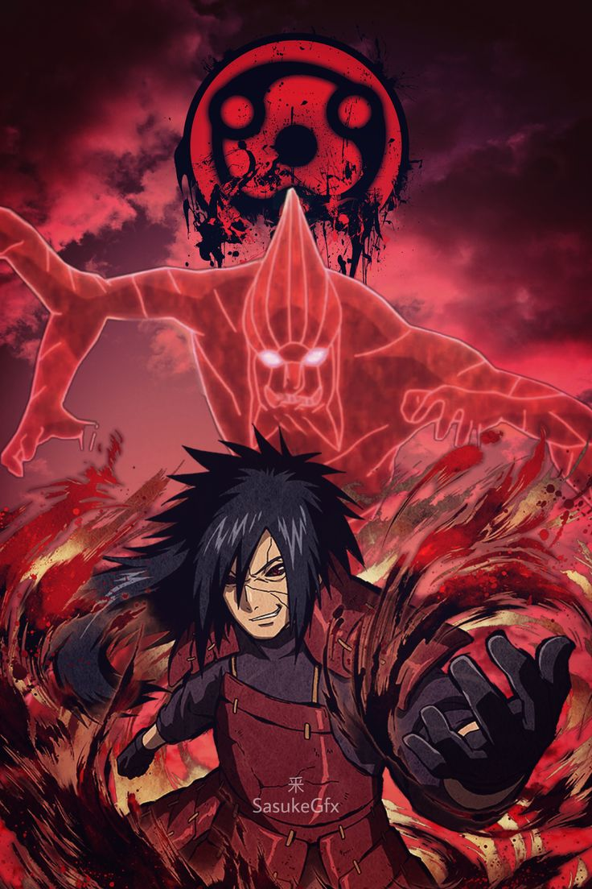
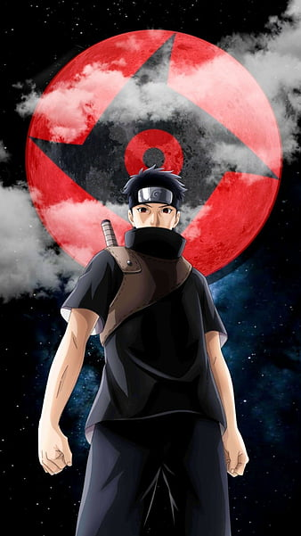
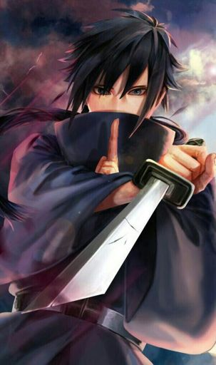

-
Sasuke Uchiha
Descrição
É um dos últimos membros sobreviventes do clã Uchiha de Konohagakure, além de ser a reencarnação atual de Indra. Ele se tornou um shinobi para que pudesse algum dia ficar forte o suficiente para se vingar contra o seu irmão mais velho, Itachi, que tinha massacrado todo o seu clã. Inicialmente, um membro do Time Kakashi de Konoha, Sasuke desertou da aldeia para obter poder com Orochimaru, e mais tarde também se juntou a Akatsuki, tornando-se um criminoso internacional no processo. Mais tarde, ele se torna uma peça fundamental para acabar com a Quarta Guerra Mundial Ninja, até ser finalmente redimido por seu rival, e também melhor amigo, Naruto Uzumaki. Sasuke decide voltar para Konoha, dedicando a sua vida para ajudar a proteger a vila e seus habitantes.
-
Itachi Uchiha
Descrição
Foi um prodígio do clã Uchiha de Konohagakure. Ele se tornou um criminoso internacional depois de assassinar seu clã inteiro, poupando apenas a vida de seu irmão mais novo, Sasuke. Ele se juntou a organização criminosa Akatsuki, onde ele entrou em frequentes conflitos com Konoha e seus ninjas, incluindo Sasuke, que procurou vingar sua família. Depois de morrer durante uma batalha contra Sasuke, as motivações de Itachi foram reveladas serem mais complicadas do que pareciam, uma vez que seu clã tramava um golpe de estado contra Konoha que traria guerra à aldeia. No fim, Itachi desejava proteger a sua vila e seu irmão, permanecendo um shinobi leal a Konohagakure até o fim.
-
Obito Uchicha
Descrição
Foi um membro do clã Uchiha de Konohagakure. Acreditava-se que ele tinha morrido durante a Terceira Guerra Mundial Shinobi, com seu único legado sobrevivente sendo o Sharingan que ele deu ao seu companheiro de equipe, Kakashi Hatake. Na verdade, Obito foi salvo da morte e treinado por Madara Uchiha, mas os acontecimentos da guerra deixaram Obito desiludido com o mundo, e ele tentou substituí-lo por um novo. Madara Uchiha fez Obito Uchiha ser seu sucessor, lhe dando o Plano Olho da Lua. Usando o pseudônimo de Tobi e "Madara Uchiha", Obito manipulou a Akatsuki das sombras para dar continuidade aos seus planos, eventualmente, indo a público com eles e, no processo, iniciando a Quarta Guerra Mundial Shinobi. Durante a guerra, Obito teve uma mudança no coração, porém, ele acabou sacrificando sua vida para ajudar a salvar o mundo.
-
Madara Uchiha
Descrição
Foi o lendário líder do clã Uchiha durante a Era dos Estados Combatentes e um dos principais antagonistas da série. Ele fundou Konohagakure ao lado de seu rival, Hashirama Senju, com a intenção de iniciar uma era de paz. Eventualmente, quando os dois não concordaram quanto ao meio para alcançar a paz, eles lutaram pelo controle da aldeia em um combate histórico, que terminou com a morte de Madara. Contudo, Madara burlou sua própria morte e se escondeu, estendendo sua própria vida para trabalhar em seus planos para acabar com os conflitos mundiais. Incapaz de conclui-los em vida, Madara confiou seu conhecimento e planos a Obito Uchiha, pouco antes de morrer. Anos mais tarde, Madara foi reanimado e depois devidamente ressuscitado durante a Quarta Guerra Mundial Ninja. No entanto, os planos de Madara são definitivamente frustrados pelos esforços das Forças Aliadas Shinobi, e à beira de seus últimos momentos, ele percebe os erros de seu caminho e ateia as pazes com Hashirama antes de sua verdadeira e definitiva morte.
-
Shisui Uchiha
Descrição
Foi um ninja extremamente forte, era integrante dos famosos Uchihas, onde mesmo sendo bastante jovem seus feitos estavam acima de pessoas mais velhas e experientes. O shinobi se mostrava bastante leal ao seu clã, seguindo as ordens rigorosamente, mas quando soube que estavam planejando um golpe de estado, ele discordou e tentou por um fim no plano, porém, depois de falhar na tentativa, optou em cometer suicídio, isso tudo para um bem maior. Shisui continha uma incrível força e suas habilidades tiveram uma grande fama pelo mundo dos ninjas, sendo até membro da Anbu e, após sua morte, muitos tentaram recuperar seu corpo, mas nenhum conseguiu este feito, pois antes de se suicidar, ele entregou seu último olho a Itachi, além de esconder toda sua existência.
-
Izuna Uchiha
Descrição
Izuna foi notado como tendo um talento prodigioso e foi um dos Uchiha mais poderosos na história. Ele e seu irmão competiram diariamente para aprimorar suas habilidades. Ambos tinham chakra excepcionalmente forte, mesmo para membros Uchiha, e treinavam diariamente para aprimorar suas habilidades. Sua destreza lhe permitiu lutar em igualdade de terreno com Tobirama Senju — Um Shinobi notado como um dos mais fortes e mais rápidos de seu tempo.